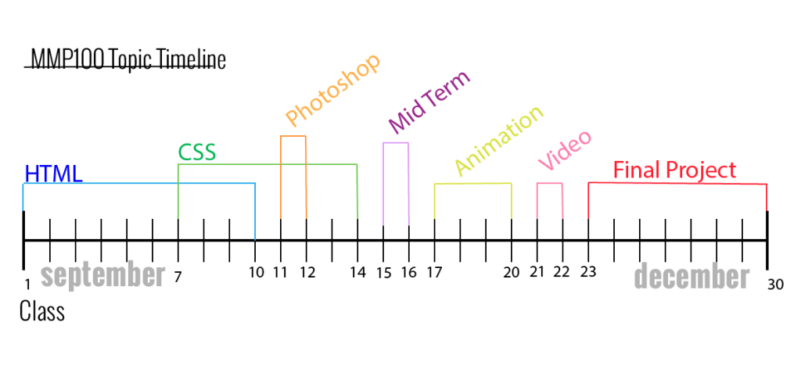

This syllabus will be updated weekly with links and notes.
Syllabus
Course Description
This course introduces students to the fundamentals of multimedia production. In a hands-on class, students will learn the essentials of program design and authoring software in an integrated computer environment. Students will learn how to combine graphics, audio and text to create programs for industrial and educational applications.
Credits: 3
Basic Skills: ENG 088 or ESL 062, ACR 094, MAT 011;
Prerequisites / Co-requisites: none
Class Resources
Class Code: examples to work with for all homework assignments / projects
Tutoring: Students who need additional one on one help are strongly encouraged to work with a BMCC tutor.
Required TextbookHTML&CSS Design and Build Websites by Jon Duckett published by John Wiley & Sons Inc. (ISBN-13: 978-1-118-00818-8)
HTML&CSS Design and Build Websites by Jon Duckett published by John Wiley & Sons Inc. (ISBN-13: 978-1-118-00818-8)
Media Storage:
Students are expected to work on assignments in class as well as outside class hours. Students are required to keep a flash drive containing all projects and are expected to bring the drive to every class.
Learning Outcomes
Students will be able to hand code HTML markup for a web page that includes text, hyperlinks and images.
Students will be able to create a multimedia website and upload it to the server.
Students will be able to use Adobe After Effects to create animations.
Students will be able to use Photoshop to create, edit and manage images for multimedia applications.
Students will be able to identify standards for using media that meet copyright law.
Students will be able to incorporate media into a project that enhances the overall project
Students will be able to create a Project Proposal that includes a written project description that identifies audience and goals, wireframes and a site map.
Measurement of Learning Outcomes
(means of assessment for student learning outcomes listed in previous column)
Midterm Project
Final Project Website URL
Animation Assignment
Photoshop Assignment
Quizzes
Homework assignments
Final Project Proposal
Course Expections + Grading Rhubric
Students are expected to come to class on time and prepared to show homework, ask questions related to class material, as well as take notes and code during class workshop time.
Teacher evaluation and class performance: 10%
Homework assignments: 40%
Midterm project: 15%
Final project: 20%
Quizzes: 15%
Assignments must be handed in on time. Points will be deducted for work that is handed in late.
Assignments may not be accepted for grading if they are late.
Attendance to the class is mandatory. Homework, quiz information, and all announcements will be covered in class. Students are expected to take notes and ask questions during class. Students must email teacher in advance of absence are are expected to get the notes from a classmate. Students will be subject to BMCC attendance policy:
The maximum number of absence hours is limited to one more hour than the contact hours as indicated in the BMCC college catalog.
For example, you may be enrolled in a four hour class that meets four times a week. You are allowed five hours of absence (not five days).
In the case of excessive absence, the instructor has the option to lower the grade or assign an "F" or "WU" grade.
Social Media/Phone policy: Social media (i.e Facebook, Instagram, email, etc) as well as student phone use is strictly prohibited during class hours.
Outline of Topics
Multimedia and the Internet: client/server protocols, http, ftp
Creating HTML documents with a text editor
Formatting text in Multimedia with CSS
Graphical editors for the web: Dreamweaver
2D Graphics for Multimedia: RGB color, Photoshop
Project development for Multimedia: project descriptions, wire frames and site maps
Animation in Multimedia: Adobe After Effects , vector graphics
Sound for Multimedia: recording, editing in Sound Forge or Audacity
Video for Multimedia
Intellectual property rights, copyright laws
Project Management
Course Schedule

Week 1:
Introductions
Overview of how the Internet works
Basic HTML syntax
First HTML document (komodo edit, sublime text is optional)
Naming conventions for HTML documents
Reading Assignment:
Read chapters 1 & 2 of HTML & CSS: Design and Build Websites
Assignment 1: Create a homepage for yourself using the html elements covered in the first 2 weeks of class. Include your name as the heading, a selfie, a link to your favorite site, and atleast 1 paragraph of text about yourself. Due: end of week 2